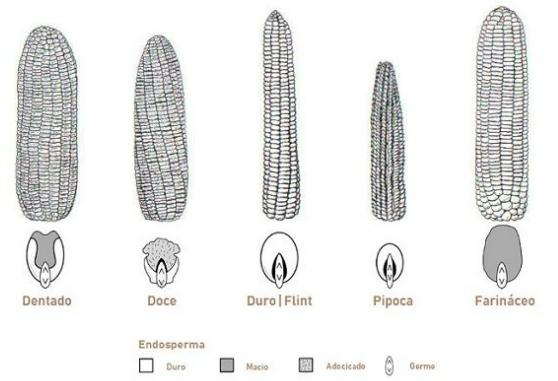
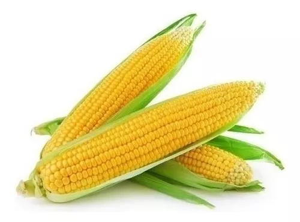
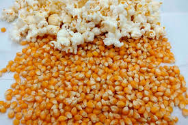

CEMAG
Hellen-Lara-Joao Lucas-Victor
Plantações de milho
Existem diversos tipos de milho, sendo os principais o milho doce, milho dentado, milho pipoca e

Quem somos?

milho-doce

milho pipoca
Lara
Joao
victor


 Joao
Joao